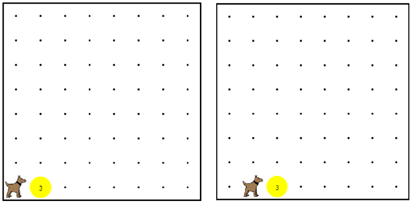

This is an example that we did in the video.
You are encouraged to play around with it, to see how it all works.
When you are done, click the arrow to go to the next problem.
這是我們在視頻中做了一個榜樣。我們鼓勵你玩它，看看它是如何工作的。當你完成後，單擊箭頭進入下一個問題。

/* Karel needs to move the stack of balls 卡雷爾需要移動球的堆棧
* at (2,1) over one spot to the right. We 在（2,1）在一個地方的權利。我們
* need to make it work for any number of 需要讓任意數量的工作
* balls in the stack. */ 球在棧中。
function start(){ 函數的開始(){
while(ballsPresent()){ 而（球存在（））{
moveOneBall(); 移動一個球（）;
}
}
/* This function takes one ball from the 這個函數有一個球從
* pile and moves it one spot to the right, 堆和移動它的一個點到右邊，
* and then returns Karel to his previous 然後返回卡雷爾他以前
* position. */ 位置。
function moveOneBall(){ 函數移動一個球（）{
takeBall(); 取球();
move(); 移動（）;
putBall(); 放球();
turnAround(); 運轉();
move(); 移動（）;
turnAround(); 運轉();
}